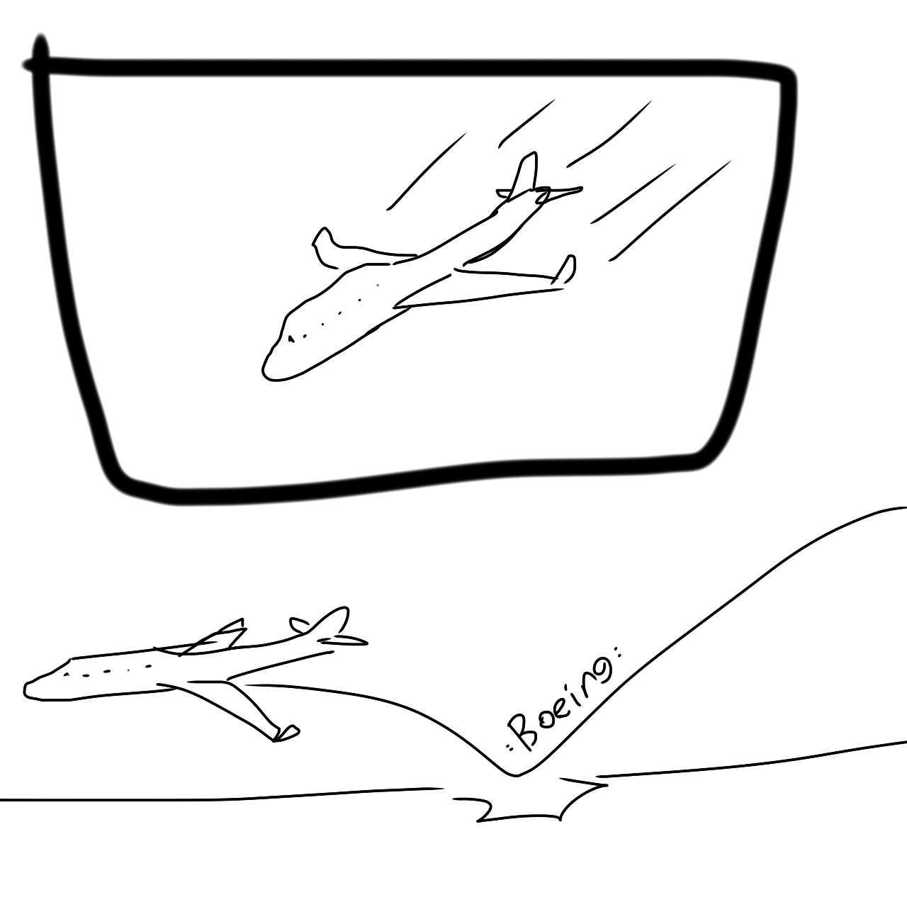
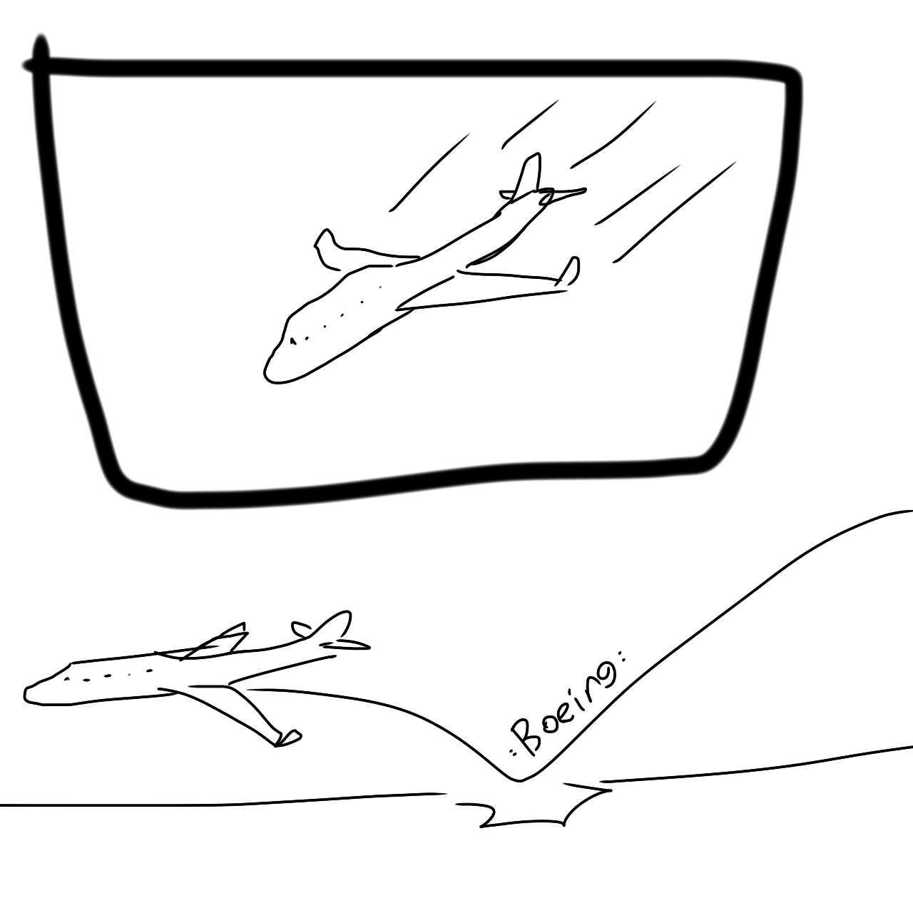

Puntentional Jokes
A Computer Science Project by Erik Heras and Hannah Larson
>< >< >< >< >< >< >< >< >< >< >< >< >< >< >< >< >< >< >< ><
* What did the magician do when he turned off the road?
He turned into a driveway!
* What's another term for a horse doctor?
An Amish mechanic!
* How many South Americans does it take to change a light bulb?
A Brazilian!
* Why is it warmer in the corner?
Because it's 90°!
* Why did the old man fall down the well?
Because he couldn't see that well!
* Why were the middle ages called the dark ages?
Because there were too many knights!
* What is the difference between a nicely dressed man on a tricycle and a poorly dressed man on a bicycle?
A tire!
 
